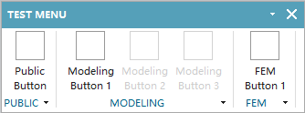

NXOpen：禁用菜单项¶
2018-09-28 | CAD/CAE integration
NXOpen：Menu Script自定义菜单说明了按照模块显示不同菜单栏内容的方法，实际应用中，即便对于同一模块下的菜单项，也会因为不满足某些使用条件而呈现禁用（灰色）状态。本篇即记录禁用/启用菜单项的方法。

静态设置方法¶
在菜单脚本中设置菜单项BUTTON的SENSITIVITY属性为OFF即可将该菜单项初始化为禁用状态。以NXOpen：Menu Script自定义菜单中test_modeling.men为例，将其中菜单项定义部分：
BUTTON TEST_MENU_MODELING_1
LABEL Modeling Button 1
BUTTON TEST_MENU_MODELING_2
LABEL Modeling Button 2
BUTTON TEST_MENU_MODELING_3
LABEL Modeling Button 3
修改为：
BUTTON TEST_MENU_MODELING_1
LABEL Modeling Button 1
BUTTON TEST_MENU_MODELING_2
LABEL Modeling Button 2
SENSITIVITY OFF
BUTTON TEST_MENU_MODELING_3
LABEL Modeling Button 3
SENSITIVITY OFF
则Modeling Button 2和Modeling Button 3默认为灰色的禁用状态，如开始的截图所示。
动态设置方法¶
更迫切的需求可能是，在代码中根据当前条件来判断和设置自定义菜单的禁用/启用状态。其方法为：
- 根据菜单名称获取菜单对象。例如上面代码中
BUTTON TEST_MENU_MODELING_2即定义了该菜单项唯一的名称标识TEST_MENU_MODELING_2。 - 设置菜单对象的
sensitivity属性。
以NXOpen Python为例：
import NXOpen
import NXOpen.MenuBar
status = NXOpen.MenuBar.MenuButtonSensitivityStatus.Insensitive # 禁用
button = NXOpen.UI.GetUI().MenuBarManager.GetButtonFromName('TEST_MENU_MODELING_2')
button.ButtonSensitivity = status